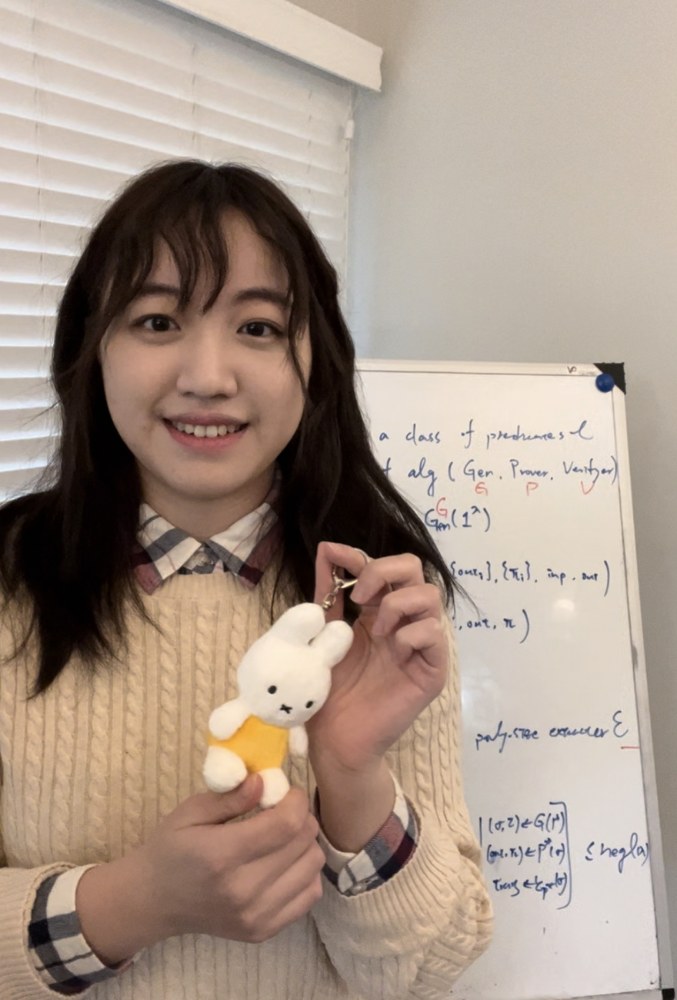

Sublinear Proofs over Polynomial Rings
Asiacrypt 2026
Mi-Ying Huang, Xinyu Mao, Jiapeng Zhang

I am Miryam Mi-Ying Huang. I am a postdoctoral research fellow at Carnegie Mellon University working with Prof. Elaine Shi.
I completed my PhD at the University of Southern California. I was advised by Prof. Jiapeng Zhang and worked closely with Prof. Shang-Hua Teng.
I visited the Simons Institute Summer Cluster on Quantum Computing in 2025 and 2026.
Mijn naam is Mirjam: I was named Miryam in remembrance of my multi-heritage family, and was later given the name Mi-Ying to echo Mirjam/Miryam/Miriam in Mandarin and Taiwanese Hokkien. Both Mi-Ying and Miryam are my legal names.
Author lists are in alphabetical order unless otherwise noted.
Asiacrypt 2026
Mi-Ying Huang, Xinyu Mao, Jiapeng Zhang
FOCS 2026 · Simons reunion talk · QCrypt 2026 invited talk
Mi-Ying Huang, Er-Cheng Tang
FOCS 2025 · Best Student Paper (Machtey Award) · QIP 2026
Mi-Ying Huang, Er-Cheng Tang
CCC 2025
Mi-Ying Huang, Xinyu Mao, Shuo Wang, Guangxu Yang, Jiapeng Zhang
EUROCRYPT 2024
Kai-Min Chung, Mi-Ying Huang, Er-Cheng Tang, Jiapeng Zhang
TCC 2023
Mi-Ying Huang, Xinyu Mao, Guangxu Yang, Jiapeng Zhang
CRYPTO 2021
Bar Alon, Hao Chung, Kai-Min Chung, Mi-Ying Huang, Yi Lee
Physical Review Letters, 2020 · Work completed as an undergraduate
Romain Géneaux et al., including Mi-Ying Huang
AI Security · Preprint, 2026
Mi-Ying Huang, Chung-Wei Lee, Max Raffel, Er-Cheng Tang
Mi-Ying Huang, Baiyu Li, Xinyu Mao, Jiapeng Zhang
Kai-Min Chung, Yao-Ching Hsieh, Mi-Ying Huang, Yu-Hsuan Huang, Tanja Lange, Bo-Yin Yang
Program co-chair: CFAIL 2026
Program committee: ITC 2026
Reviewer: STOC, CRYPTO, EUROCRYPT, TCC, CCC, ITCS, ASIACRYPT, ICALP, QIP, and QCrypt.